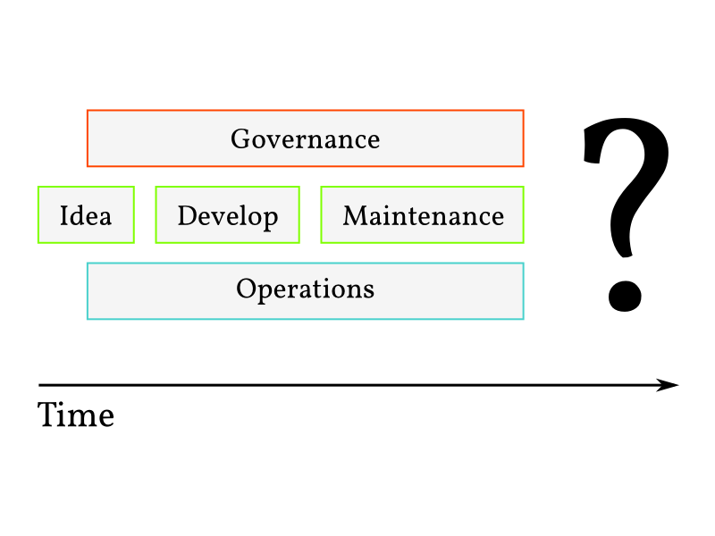
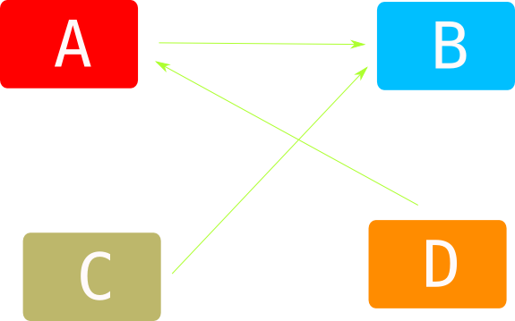
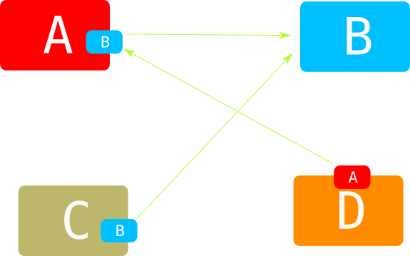
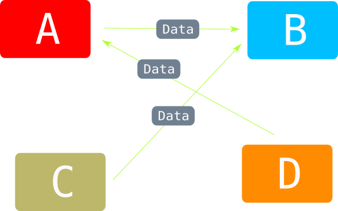
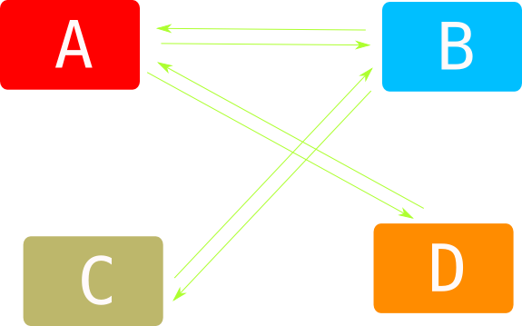
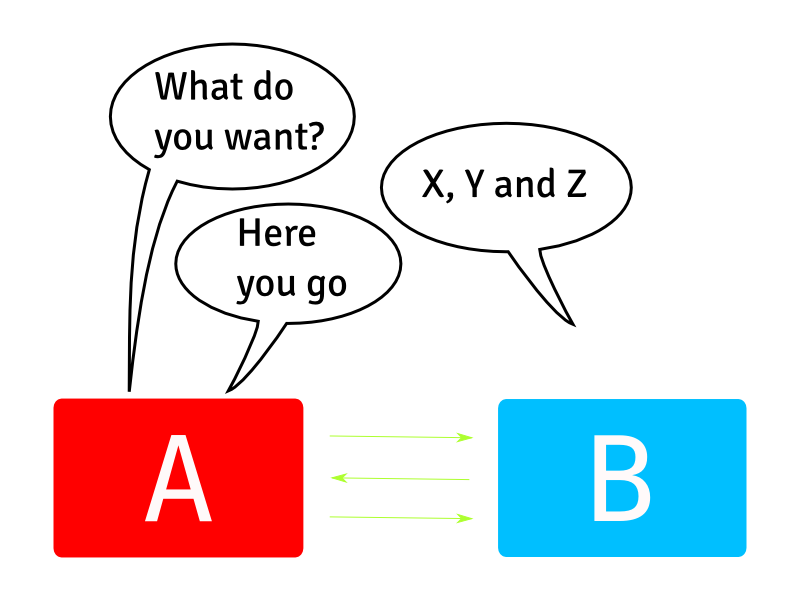
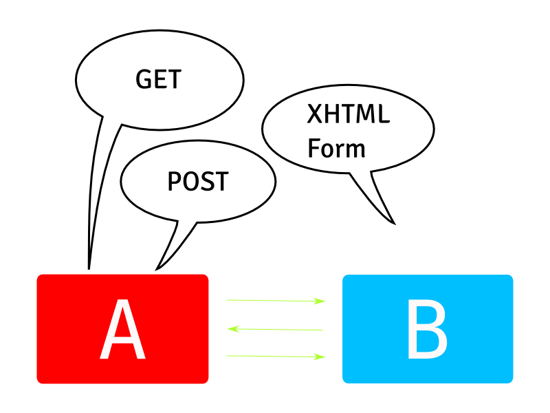
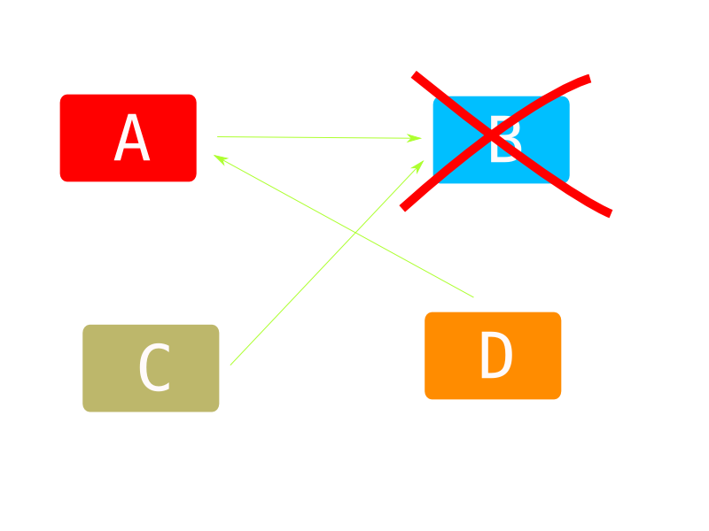

Design For Replacability
Architecture For An Agile Lifestyle
Marcus Ahnve
http://marcusahnve.org
marcus.ahnve@valtech.se
marcus@ahnve.com
@mahnve

About me
- Playing Agile Coach
- Developed software professionally since 1996
- Rubyist
tl;dr
Asking yourself "How will I replace this system" will help you design better systems.
We Create Systems That Are Hard To Replace

"Switching a system is very painful ... don't do it unless it is absolutely necessary"
Lifecycle Management in Software Development does not include death
Or ... we don't really have lifecycle management at all
Application Lifecycle Management
Background
Cynefin Framework

Where is architecture. Reason about the role of the architect as the expert. Results in one way streets
IASA Definition of Software Architecture
"The software architecture of a system is the set of structures needed to reason about the system, which comprise software elements, relations among them, and properties of both. [1] The term also refers to documentation of a system's software architecture. Documenting software architecture facilitates communication between stakeholders , documents early decisions about high-level design, and allows reuse of design components and patterns between projects"
Ivory Tower Architecure
- Early
- Outside development
- Boxes and arrows
- Sets out to limit choices
- Component design
Supposedly noone talked about architecture until the eighties, OO Multitiered started it, more complex applications
What Traditional Architecture Focus On
Reuse
- Tools
- Libraries
- Frameworks
Spring. Reuse of business logic doesn't work
Maintainability
- Resource availability
- What if people quit?
- Standards
Stakeholder
- Sueability
- Demoability
- Statsability
- Free golf rounds
And the result is ...
Platforms!

You need another platform to get off, or a rescue boat
Cobol
Of course everybody is migrating from this
Java

Because adapting a new platform can't be wrong
Vendor Platforms
You know who
No, I don't have permission to use this image.
Platforms Are One Way, Dead End Streets
How will you migrate away from it?
OK, now what?
This is the part of the presentation where we ask ourselves ok, so what should we do?
What happens when we ask ourselves "How will we replace it"
- Smaller parts
- Implementation not that important
- Communication important though
Section
Split Section
we don't really need to know the internals, which is good because ...?
But The Building Blocks Are Too Big
How can we replace it?. Made the same mistake myself
Smaller Parts

organized by usage, stories, use cases
Standardize on:
- Protocol
- Data
- Never Implementation
you might have the same implementation, but dont stdze!
Example

SOAP

SOAP
- Separated by organization only
- Technically joined at the hip
Sending JSON

The app url is the namespace
How do we know what data to send?

Self Describing Services

Self Describing Services

OAuth
Adding apps as we go. No need for Oauth to know which apps. Heroku
Other benefits
Releasability
Short Term Replacability - Releasability
Scalability

Failability

Summing up
Planning for end of life will bring you:
- Replacability
- Modularity
- Releasability
- Scalability
- Fault tolerance
- Money, Fame And A Happy Life
"A complex system that works is invariably found to have evolved from a simple system that works. -- John Gall"
Thank You!
http://marcusahnve.org
marcus.ahnve@valtech.se
marcus@ahnve.com
@mahnve
Slides